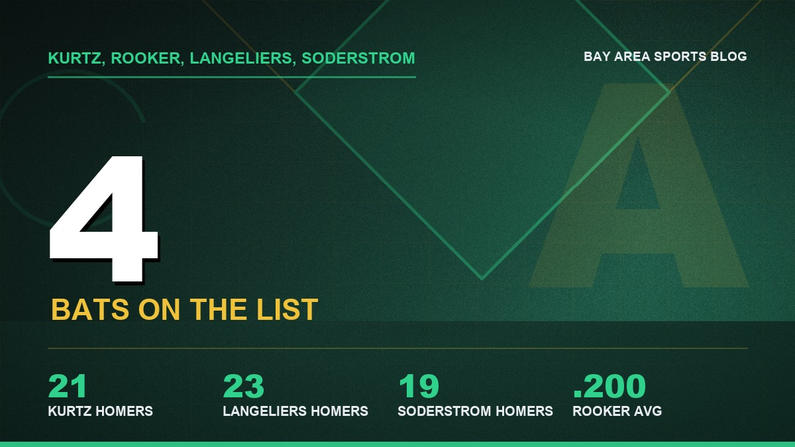
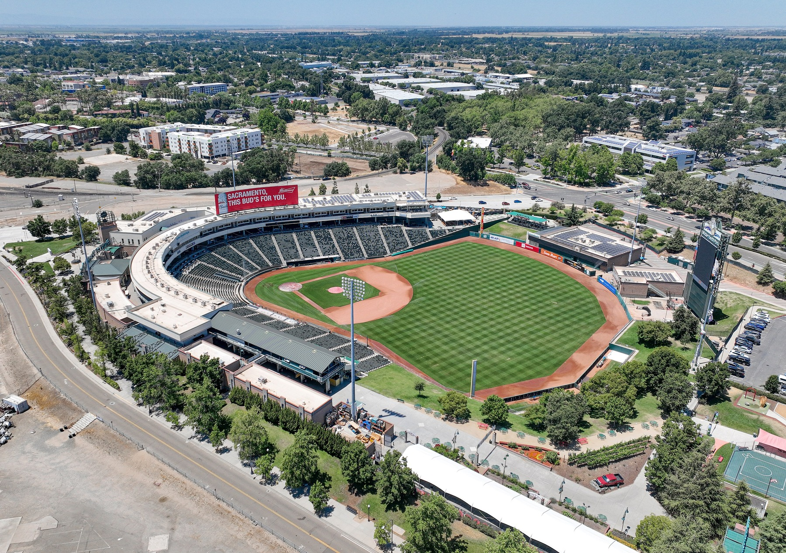
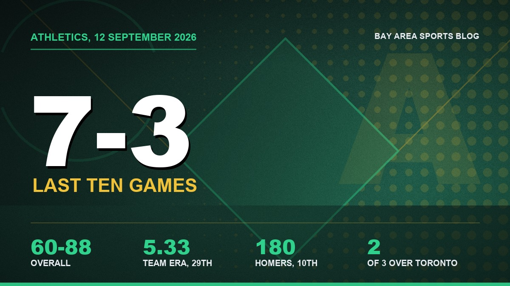

The A's Lost Their Whole Middle of the Order and Are Playing Their Best Baseball of the Year
Kurtz and Rooker on the 60 day, Langeliers and Soderstrom on the 10 day, a 5.33 team ERA, and somehow seven wins in ten games. I can't explain it either.

The A's are 60 and 88 and they've won seven of their last ten, and somebodyneeds to explain to me how the team missing this much of its lineup is theone playing the best baseball in the division right now.

Four of them are hurt.
Nick Kurtz is on the 60 day and Brent Rooker is with him. Shea Langeliersand Tyler Soderstrom are both on the 10 day. That's the middle of the orderin street clothes in a Triple-A ballpark in West Sacramento in September,and this group still took two of three from Toronto, beat Seattle 6 to 5 onFriday, and went into Seattle earlier in the month and won three in a row.

I go back and forth on how to feel about this team and I've given uppretending otherwise. They took my ballpark. They took the name off thefront and left it on a scoreboard ninety minutes up I-80. And then HenryBolte hits .276 as a rookie and I catch myself checking the box score ateleven at night like nothing happened. the grievance column is the honest version ofthat argument and I stand by every word of it, right up until somebody ingreen goes first to third.
Ninety minutes up I-80.
Kurtz is the one that hurts. He was at .256 with 21 homers, 69 RBI and an.879 OPS in 99 games, the best bat on the roster by a distance, and he'sbeen shut down since. Rooker got into 48 games and hit .200. Langeliers had23 homers in 93 games before his own trip to the list, Soderstrom 19 in 109.Add it up and this club still hit 180 home runs, tenth in baseball, whichfor a lost year with four bats missing is a genuinely strange number.

Zack Gelof has 17 homers in 97 games and a .770 OPS. Bolte is the one I'dbuy a ticket for, .276 with ten homers and legs. Carlos Cortes has quietlyhit .260. Lawrence Butler at .229 with 14 is the disappointment of the yearand I'm not going to sugarcoat it, because two summers ago he looked like afranchise outfielder and he hasn't hit since.

The pitching is why the record reads like that. A 5.33 team ERA. JeffreySprings is 4 and 13 with a 5.93, Jack Perkins is at 6.53, Gage Jump is 6 and10 with a 5.12 and 106 strikeouts as a rookie, and Jacob Lopez at 4.78 over111 innings has been the only steady thing in that rotation all year.
Twenty ninth out of thirty.

About the ballpark, because every number up there is bent by it. SutterHealth Park plays small and hot and gives up homers near the top of theleague, while Oracle takes about a fifth of them away. Ninety minutes apart.Nobody reading these pitchers off a stat line is correcting for thatproperly, and I'd include whoever ends up deciding which of them is on theroster when the Vegas building opens. The Sutter Health Park page has the dimensions and thewind.
Which is the part nobody wants to say out loud in September. 2027 is anotheryear in Sacramento, the dome on the Strip is tracking toward 2028, and everyyoung player having a nice month right now is auditioning for a team that'llplay in a different state. The relocation timeline keeps the dates straight.

So what are the last two weeks for? Bolte and Jump, mostly. Whether Butlershows one sign. Whether Gelof can stay upright long enough to be counted onfor a full year, which he hasn't managed yet. Sixty wins with that rotationand that injured list isn't the disaster the standings say it is, and I hatethat I just typed a sentence defending them.
My dad hasn't watched an inning since 2024 and he asks me about them everySunday anyway. That's the whole condition right there, and what the Bay Area lost says itbetter than I can.
The roster is on the depth chart page, and the rest of the coverage sits on theA's hub.
More coverage: Bay Area Sports section · Bay Area Sports · Bay Area Sports Blog home